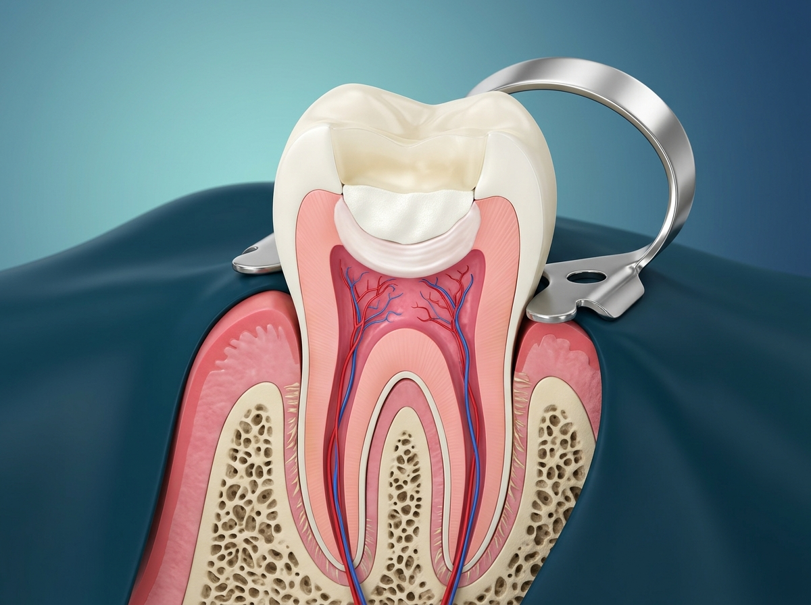

NT-06: Điều trị bảo tồn tủy sống – VPT: Chỉ định, lựa chọn ca, vật liệu và tiên lượng

Trước đây, mỗi khi một lỗ sâu tiến sát hoặc làm lộ một điểm nhỏ vào buồng tủy, phản xạ quen thuộc của nhiều nha sĩ là tiến hành lấy tủy toàn bộ. Thế nhưng, trong suốt một thập kỷ qua, Điều trị bảo tồn tủy sống (VPT – Vital Pulp Therapy) đã trở thành trụ cột của Nội nha hiện đại và triết lý Nha khoa can thiệp tối thiểu (MID). Giữ được tủy sống đồng nghĩa với việc chiếc răng tiếp tục được nuôi dưỡng, duy trì khả năng cảm nhận lực nhai và miễn dịch tự nhiên, tránh nguy cơ giòn gãy sớm của răng đã lấy tủy.
1. VPT là gì và gồm những kỹ thuật nào?
VPT bao gồm chuỗi các thủ thuật sinh học nhằm bảo vệ và duy trì sức sống của toàn bộ hoặc một phần mô tủy:
- Lấy ngà sâu có chọn lọc & Che tủy gián tiếp (Indirect Pulp Capping): Giữ lại lớp ngà ảnh hưởng mỏng sát trần tủy để tránh mở tủy, đặt vật liệu sinh học kích thích tái tạo ngà thứ ba.
- Che tủy trực tiếp (Direct Pulp Capping): Đặt vật liệu sinh học trực tiếp lên điểm lộ tủy nhỏ sạch khuẩn.
- Lấy tủy buồng bán phần (Partial Pulpotomy – Cvek): Lấy bỏ lớp tủy bề mặt bị viêm nhiễm khoảng 2–3 mm để tiếp cận phần tủy lành bên dưới trước khi che phủ.
- Lấy tủy buồng toàn phần (Full Pulpotomy): Lấy bỏ toàn bộ tủy thân trong buồng tủy, giữ lại phần tủy chân còn sống khỏe mạnh.
2. Chỉ định và tiêu chí lựa chọn ca chuẩn xác
Thành công của VPT phụ thuộc quyết định vào việc lựa chọn đúng ca bệnh và kiểm soát vô khuẩn tuyệt đối:
- Tình trạng tủy phù hợp: Ưu tiên răng có chẩn đoán tủy bình thường, viêm tủy có hồi phục, hoặc các trường hợp lộ tủy do chấn thương/cơ học mới xảy ra. Với một số ca viêm tủy không hồi phục ở răng còn trẻ hoặc mô tủy chân còn tốt, lấy tủy buồng toàn phần có thể được cân nhắc nếu đáp ứng tiêu chí cầm máu.
- Điều kiện tiên quyết — Cô lập đê cao su (Rubber Dam): Không có đê cao su, nước bọt chứa hàng triệu vi khuẩn sẽ tràn vào buồng tủy và làm thất bại thủ thuật.
- Đánh giá trực tiếp mô tủy dưới phóng đại: Sau khi làm sạch ngà sâu từ chu vi vào trung tâm, nếu lộ tủy, bác sĩ quan sát mô tủy phải đỏ hồng tươi, săn chắc, không có dịch mủ hay vùng hoại tử xám bở.
- Thử nghiệm cầm máu (Hemostasis): Dùng bông vô khuẩn thấm NaOCl nồng độ nhẹ (1.5–2.5%) hoặc nước muối sinh lý ép nhẹ trong 2–5 phút. Nếu máu ngừng chảy hoàn toàn trong vòng 5 phút, phần tủy bên dưới đủ khỏe để thực hiện VPT. Nếu máu tiếp tục rỉ sẫm màu không cầm được sau 5–10 phút, viêm nhiễm đã lan sâu xuống ống tủy chân — cần chuyển sang lấy tủy toàn bộ.
3. Vật liệu sinh học trong VPT: Bước ngoặt Calcium Silicate
Vật liệu từng dùng truyền thống là Hydroxit Canxi (Ca(OH)₂) tuy có tính kiềm diệt khuẩn nhưng dễ hòa tan theo thời gian và tạo cầu ngà nhiều lỗ rỗng vi kẽ. Ngày nay, tiêu chuẩn vàng của VPT là nhóm xi măng Calcium Silicate thủy lực (HCSCs) không chứa nhựa như MTA và Biodentine:
- Tương hợp sinh học tuyệt vời: Giải phóng ion
Ca^{2+}vàOH^-tạo pH kiềm (~11–12.5) kháng khuẩn mạnh, đồng thời kích thích giải phóng yếu tố tăng trưởngTGF-\beta1từ ngà răng, đánh thức tế bào gốc tủy biệt hóa thành tế bào tạo ngà đắp nên cầu ngà sửa chữa đặc chắc. - Độ kín khít vượt trội: Không co ngót khi đông cứng, kết dính vi cơ học tốt với ngà ẩm. Đặc biệt, Biodentine đông cứng nhanh (~12 phút) và ít gây đổi màu răng, rất thuận tiện để trám phục hồi kín khít ngay trong một lần hẹn.
4. Tiên lượng và theo dõi sau VPT
Nhiều nghiên cứu lâm sàng dài hạn cho thấy tỷ lệ thành công của VPT bằng MTA/Biodentine đạt mức rất cao (trên 85–95% tùy kỹ thuật và lựa chọn ca) khi bờ miếng trám phía trên được dán kín khít tuyệt đối ngăn vi kẽ tái xâm nhập. Sau điều trị, cô bác cần tái khám định kỳ sau 1, 3, 6 và 12 tháng để bác sĩ kiểm tra đáp ứng thử lạnh và chụp X-quang xác nhận cầu ngà hình thành tốt, vùng quanh chóp bình thường.
Địa chỉ: Số 15 đường Võ Nguyên Giáp, phường Đức Xuân, tỉnh Thái Nguyên
Hotline & Zalo tư vấn trực tiếp: 0912 343 858 · Website: https://tcvuong6-wq.github.io/bsvuong-web/